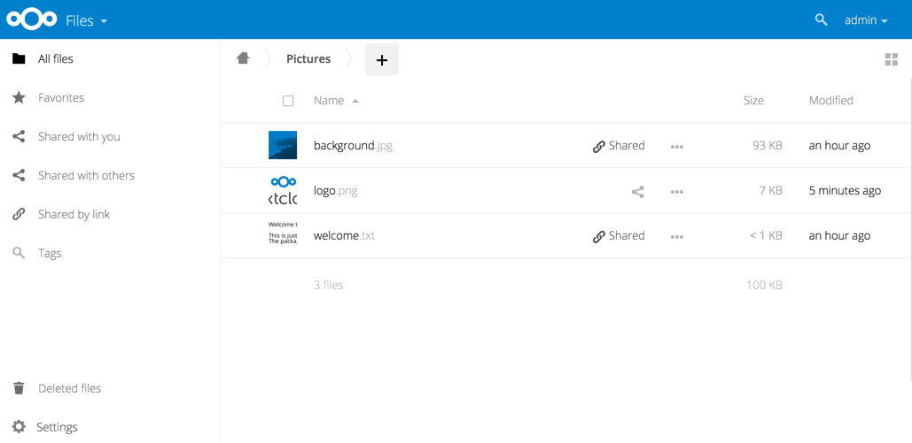

Providing default files
You may distribute a set of default files and folders to all users by placing
them in directory that is readable by the webserver user. This allows you to
overwrite the files that are shipped by default with Nextcloud in
core/skeleton. That custom directory should then be configured in the
config.php via the configuration option skeletondirectory (see
Configuration Parameters). Leave
empty to not copy any skeleton files.
These files will be copied only to new users after their initial login, and
existing users will not see files that are added to this directory after their
first login. The files in the skeleton directory are copied into the
users data directories, so they may change and delete the files without
affecting the originals.
This screenshot shows a set of photos in the skeleton directory.
They appear on the user’s Nextcloud Files page just like any other files.
Note
Overwriting the files in core/skeleton is not recommended,
because those changes will be overwritten on the next update of the Nextcloud
server.
Default file templates
The default path for user templates is at /Templates (translated in the user’s language).
If you need to override this path for all users, you can set
occ config:app:set core defaultTemplateDirectory --value="CustomPath"
This will only apply to new users.